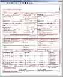

An advanced Imaging widget for Java Swing applications
[Home] [Download] [F.A.Q.] [Java API] [General Usage] [Advanced Topics] [SF Project]
An advanced Imaging widget for Java Swing applications
[Home] [Download] [F.A.Q.] [Java API] [General Usage] [Advanced Topics] [SF Project]An easy to use, simple to extend, fast, and reliable Swing component. It utilizes Java2D for all rendering operations. It's built in an MVC fashion, with an additional image source abstraction. Abstracting the ImageSource allows you to easily load images (any BufferedImage will do) for manipulation from JAI, ImageIO, and AWT classes. Support for multiple renderings in a single file (multi-page TIFF, animated GIF, etc.) exists, as does an ImageSource for compositing multiple ImageSources as layers of an image to display.
Basic Image manipulation provided by Shimaging includes...

A headless image manipulation library. It's not for loading / saving of images, annotation, etc. Although these behaviours could be (easily!) added via extension, that dosen't exist just yet. If you're interested in adding this behavior, we happily invite you to join the project and start contributing today!
I was working on an internal project for a client, and had a need for a Java-based imaging widget. For the life of me, I could not find one that fit our requirements. Without any other viable choice, it was time to start building one. The first implementation I made worked, but had far too many pitfalls, gotchas, and suffered from tremendously iterative design with a prototype mentality. Although the performance stunk, the design was a disaster, and the code was crufty at best, the initial set of classes worked well enough to get the application into testing, at which point I refactored, re-engineered, and drastically improved upon that inital prototype.
That first attempt was TIFF specific, relied heavily upon (and used for rendering) JAI, and stunk when it came to displaying, rotating, rescaling (contrast & brightness), and zooming. The only place it really was decent was loading images. Shimaging is the result of taking the time to sit down with what I had, evaluating what was good, documenting what was bad, and drawing up a new design from scratch. Once I had the idea down on paper, I got to working on it, and over the course of about a week, Shimaging took form. It was written, tested, profiled, tweaked, poked, proded, and finally re-integrated into the project that spawned the initial need for it. Since I started on Shimaging, I made sure I kept it's source as a separate library, so that it can be easily built and included as a dependency for any other project.
If you would like to contribute, find support, report bugs, request features, or give any kind of feedback (negative & positive are both welcome) drop a note on the Shimaging mailing list.
Prior to taking the time to carefully design, document, build, benchmark, and tweak what is now Shimaging, I spent a lot more time searching and scouring over the internet for something similar that could be used in a Java Swing application. After several hours of not getting anywhere with the search and reviewing the initial prototype I thought, "Imaging, shimaging! There's GOT to be a better way."
Well, there is now.